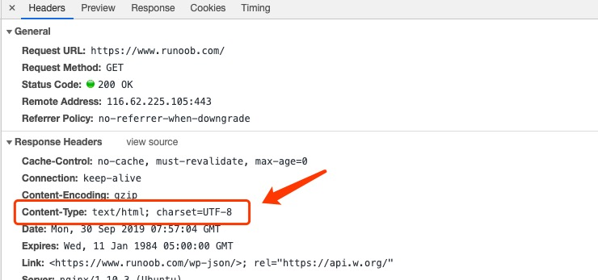

Airren Ren
Friday, August 21, 2020
「HTTP」HTTP 9 种请求方式
HTTP简介
HTTP协议（HyperText Transfer Protocol， 超文本传输协议），是一个基于TCP/IP通信协议来传输数据。是用于从服务器传输超文本到本地浏览器的协议。HTTP使用同一资源标识符（Uniform Resource Identifiers, URL）来传输数据和建立连接。
HTTP协议工作于客户端-服务端（C-S）架构上。浏览器作为HTTP客户端通过URL向服务端发送请求，并获得返回数据。
HTTP特点：
-
HTTP是无连接的： 无连接的含义是限制每次连接只处理一个请求。服务器处理完客户的请求，并收到客户的应答后，即断开连接。
-
HTTP是无状态的： HTTP是无状态协议。无状态是指协议对于事务处理灭有记忆能力。缺少状态意味着如果后续处理需要前面的信息，则它必须重传，这样可能导致每次传输的数据量增大。
-
HTTP是媒体独立的： 任何数据类型都可以通过HTTP发送，客户端以及服务器要指定相同的MIME-type类型。媒体类型通常通过 HTTP 协议，由 Web 服务器告知浏览器的，更准确地说，是通过 Content-Type 来表示的。例如：Content-Type：text/HTML。通常只有广泛应用的格式才会获得一个 MIME Type，如果是某个客户端自己定义的格式，一般只能以 application/x- 开头。
Web-Browser <===> HTTP Server <===> CGI(Common GateWay Interface) Program <==>Database
客户端请求消息
请求消息包括以下格式：请求行（request line）、请求头部（header）、空行和请求数据四个部分组成

服务器响应消息
响应也由四个部分组成，分别是：状态行、消息报头、空行和响应正文。

不带Body 的请求
1# 请求消息
2GET /health HTTP/1.1
3Host: 127.0.0.1:8080
4User-Agent: curl/7.65.3
5Accept: */*
6
7# 返回消息
8HTTP/1.1 200 OK
9Content-Type: text/plain; charset=utf-8
10Date: Sat, 22 Aug 2020 17:56:22 GMT
11Content-Length: 2
12
13ok
带Body的请求
1# 请求消息
2GET /health?val=123 HTTP/1.1
3Host: localhost:8080
4User-Agent: curl/7.65.3
5Accept: */*
6Content-Type: text/plain
7Content-Length: 9
8
9body test
10
11# 返回消息
12HTTP/1.1 200 OK
13Content-Type: text/plain; charset=utf-8
14Date: Sat, 22 Aug 2020 18:17:14 GMT
15Content-Length: 7
16
17ok: 123
Http9种请求
http定义了9中请求动作，来表明对Request-URI指定的资源进行不同的操作方式。是一种http协议的使用规范。
HTTP1.0 定义了三种请求方法： GET, POST 和 HEAD方法。
HTTP1.1 新增了六种请求方法：OPTIONS、PUT、PATCH、DELETE、TRACE 和 CONNECT 方法。
| Method | Intro | 使用约束 | 幂等性 |
|---|---|---|---|
| GET | 向特定资源发起请求。 | 只是获取数据，并不会对数据造成修改 | 幂等 |
| POST | 向特定资源提交数据进行进行处理请求（例如提交表单或者创建文件），请求数据类型： multipart/form-data**或 application/x-www-form-urlencoded | 一般是创建一个新的实体（例如新增一个员工信息） | |
| PUT | 向指定资源位置上传最新的内容 | 一般是更新一个已有实体（更新员工信息） | |
| DELETE | 请求删除Request-URI所标识的资源 | 删除资源（删除某个员工信息） | |
| PATCH | 对PUT的补充，默认是以x-www-form-urlencoded的contentType | 用来更新部分资源 | |
| HEAD | 向服务器请求与GET一致的响应，响应体不返回，响应头返回 | 幂等 | |
| OPTIONS | 返回服务其针对特定资源所支持的HTTP请求方法，发送*测试服务器的功能性 |
||
| TRACE | 回显服务器收到的请求，主要用于测试或者诊断 | 提供一种方法来测试当一个请求发生的时候，服务器通过网络收到的内容。所以它会返回你发送的内容。 | |
| CONNECT | HTTP/1.1协议中预留给能够将连接改为管道方式的代理服务器。 |
虽然HTTP的请求方式有9种，但是我们在实际应用中常用的也就是get和post，其他请求方式也都可以通过这两种方式间接的来实现。
GET 和 POST的区别
| GET | POST | |
|---|---|---|
| 幂等性 | GET和HEAD请求是幂等的 ，被称为安全方法。不会对服务端的信息产生修改 | 非幂等的，可能会修改服务器的资源 |
| Url | 请求数据附加在在URL中，以"?“链接URL和请求数据，多个参数使用&连接。URL编码采用ASCII编码，所有的非ASCII字符都要在编码后传输。可以保存为浏览器书签 | 请求数据在Body中 |
| 传输数据大小 | 在HTTP规范中对地址栏的长度和传输数据的大小没有限制，但是，特定的浏览器和服务端对URL的长度有限制。使用GET请求时候，传输数据会受到URL长度的限制。 | 传输数据大小理论上不受限制 |
| 安全性 | GET请求会把信息暴露在地址栏，可能会通过浏览器缓存或者历史记录暴露信息。GET请求提交的数据还可能造成Cross-site request frogery攻击，即利用网站对用户标识的信任欺骗用户的浏览器发送HTTP请求给目标站点 | 不存在上述问题 |
HTTP 响应头信息
| 应答头 | 说明 |
|---|---|
| Allow | 服务器支持哪些请求方法（如GET、POST等）。 |
| Content-Encoding | 文档的编码（Encode）方法。只有在解码之后才可以得到Content-Type头指定的内容类型。利用gzip压缩文档能够显著地减少HTML文档的下载时间。Java的GZIPOutputStream可以很方便地进行gzip压缩，但只有Unix上的Netscape和Windows上的IE 4、IE 5才支持它。因此，Servlet应该通过查看Accept-Encoding头（即request.getHeader("Accept-Encoding")）检查浏览器是否支持gzip，为支持gzip的浏览器返回经gzip压缩的HTML页面，为其他浏览器返回普通页面。 |
| Content-Length | 表示内容长度。只有当浏览器使用持久HTTP连接时才需要这个数据。如果你想要利用持久连接的优势，可以把输出文档写入 ByteArrayOutputStream，完成后查看其大小，然后把该值放入Content-Length头，最后通过byteArrayStream.writeTo(response.getOutputStream()发送内容。 |
| Content-Type | 表示后面的文档属于什么MIME类型。Servlet默认为text/plain，但通常需要显式地指定为text/html。由于经常要设置Content-Type，因此HttpServletResponse提供了一个专用的方法setContentType。 |
| Date | 当前的GMT时间。你可以用setDateHeader来设置这个头以避免转换时间格式的麻烦。 |
| Expires | 应该在什么时候认为文档已经过期，从而不再缓存它 |
| Last-Modified | 文档的最后改动时间。客户可以通过If-Modified-Since请求头提供一个日期，该请求将被视为一个条件GET，只有改动时间迟于指定时间的文档才会返回，否则返回一个304（Not Modified）状态。Last-Modified也可用setDateHeader方法来设置。 |
| Location | 表示客户应当到哪里去提取文档。Location通常不是直接设置的，而是通过HttpServletResponse的sendRedirect方法，该方法同时设置状态代码为302。 |
| Refresh | 表示浏览器应该在多少时间之后刷新文档，以秒计。除了刷新当前文档之外，你还可以通过setHeader("Refresh", "5; URL=http://host/path")让浏览器读取指定的页面。 注意这种功能通常是通过设置HTML页面HEAD区的＜META HTTP-EQUIV="Refresh" CONTENT="5;URL=http://host/path"＞实现，这是因为，自动刷新或重定向对于那些不能使用CGI或Servlet的HTML编写者十分重要。但是，对于Servlet来说，直接设置Refresh头更加方便。 注意Refresh的意义是"N秒之后刷新本页面或访问指定页面”，而不是"每隔N秒刷新本页面或访问指定页面"。因此，连续刷新要求每次都发送一个Refresh头，而发送204状态代码则可以阻止浏览器继续刷新，不管是使用Refresh头还是＜META HTTP-EQUIV="Refresh" ...＞。 注意Refresh头不属于HTTP 1.1正式规范的一部分，而是一个扩展，但Netscape和IE都支持它。 |
| Server | 服务器名字。Servlet一般不设置这个值，而是由Web服务器自己设置。 |
| Set-Cookie | 设置和页面关联的Cookie。Servlet不应使用response.setHeader("Set-Cookie", ...)，而是应使用HttpServletResponse提供的专用方法addCookie。参见下文有关Cookie设置的讨论。 |
| WWW-Authenticate | 客户应该在Authorization头中提供什么类型的授权信息？在包含401（Unauthorized）状态行的应答中这个头是必需的。例如，response.setHeader("WWW-Authenticate", "BASIC realm=＼"executives＼"")。 注意Servlet一般不进行这方面的处理，而是让Web服务器的专门机制来控制受密码保护页面的访问（例如.htaccess）。 |
HTTP 状态码
当浏览者访问一个网页时，浏览者的浏览器会向网页所在服务器发出请求。当浏览器接收并显示网页前，此网页所在的服务器会返回一个包含HTTP状态码的信息头（server header）用以响应浏览器的请求。
HTTP状态码（HTTP Status Code）
- 200 - 请求成功
- 301 - 资源（网页等）被永久转移到其它URL
- 404 - 请求的资源（网页等）不存在
- 500 - 内部服务器错误
HTTP状态码分类
HTTP状态码由三个十进制数字组成，第一个十进制数字定义了状态码的类型，后两个数字没有分类的作用。HTTP状态码共分为5种类型：
| 分类 | 分类描述 |
|---|---|
| 1** | 信息，服务器收到请求，需要请求者继续执行操作 |
| 2** | 成功，操作被成功接收并处理 |
| 3** | 重定向，需要进一步的操作以完成请求 |
| 4** | 客户端错误，请求包含语法错误或无法完成请求 |
| 5** | 服务器错误，服务器在处理请求的过程中发生了错误 |
HTTP状态码列表:
| 状态码 | 状态码英文名称 | 中文描述 |
|---|---|---|
| 100 | Continue | 继续。客户端应继续其请求 |
| 101 | Switching Protocols | 切换协议。服务器根据客户端的请求切换协议。只能切换到更高级的协议，例如，切换到HTTP的新版本协议 |
| 200 | OK | 请求成功。一般用于GET与POST请求 |
| 201 | Created | 已创建。成功请求并创建了新的资源 |
| 202 | Accepted | 已接受。已经接受请求，但未处理完成 |
| 203 | Non-Authoritative Information | 非授权信息。请求成功。但返回的meta信息不在原始的服务器，而是一个副本 |
| 204 | No Content | 无内容。服务器成功处理，但未返回内容。在未更新网页的情况下，可确保浏览器继续显示当前文档 |
| 205 | Reset Content | 重置内容。服务器处理成功，用户终端（例如：浏览器）应重置文档视图。可通过此返回码清除浏览器的表单域 |
| 206 | Partial Content | 部分内容。服务器成功处理了部分GET请求 |
| 300 | Multiple Choices | 多种选择。请求的资源可包括多个位置，相应可返回一个资源特征与地址的列表用于用户终端（例如：浏览器）选择 |
| 301 | Moved Permanently | 永久移动。请求的资源已被永久的移动到新URI，返回信息会包括新的URI，浏览器会自动定向到新URI。今后任何新的请求都应使用新的URI代替 |
| 302 | Found | 临时移动。与301类似。但资源只是临时被移动。客户端应继续使用原有URI |
| 303 | See Other | 查看其它地址。与301类似。使用GET和POST请求查看 |
| 304 | Not Modified | 未修改。所请求的资源未修改，服务器返回此状态码时，不会返回任何资源。客户端通常会缓存访问过的资源，通过提供一个头信息指出客户端希望只返回在指定日期之后修改的资源 |
| 305 | Use Proxy | 使用代理。所请求的资源必须通过代理访问 |
| 306 | Unused | 已经被废弃的HTTP状态码 |
| 307 | Temporary Redirect | 临时重定向。与302类似。使用GET请求重定向 |
| 400 | Bad Request | 客户端请求的语法错误，服务器无法理解 |
| 401 | Unauthorized | 请求要求用户的身份认证 |
| 402 | Payment Required | 保留，将来使用 |
| 403 | Forbidden | 服务器理解请求客户端的请求，但是拒绝执行此请求 |
| 404 | Not Found | 服务器无法根据客户端的请求找到资源（网页）。通过此代码，网站设计人员可设置"您所请求的资源无法找到"的个性页面 |
| 405 | Method Not Allowed | 客户端请求中的方法被禁止，本来应该用PUT，结果用POST请求就会报这个错误。 |
| 406 | Not Acceptable | 服务器无法根据客户端请求的内容特性完成请求 |
| 407 | Proxy Authentication Required | 请求要求代理的身份认证，与401类似，但请求者应当使用代理进行授权 |
| 408 | Request Time-out | 服务器等待客户端发送的请求时间过长，超时 |
| 409 | Conflict | 服务器完成客户端的 PUT 请求时可能返回此代码，服务器处理请求时发生了冲突 |
| 410 | Gone | 客户端请求的资源已经不存在。410不同于404，如果资源以前有现在被永久删除了可使用410代码，网站设计人员可通过301代码指定资源的新位置 |
| 411 | Length Required | 服务器无法处理客户端发送的不带Content-Length的请求信息 |
| 412 | Precondition Failed | 客户端请求信息的先决条件错误 |
| 413 | Request Entity Too Large | 由于请求的实体过大，服务器无法处理，因此拒绝请求。为防止客户端的连续请求，服务器可能会关闭连接。如果只是服务器暂时无法处理，则会包含一个Retry-After的响应信息 |
| 414 | Request-URI Too Large | 请求的URI过长（URI通常为网址），服务器无法处理 |
| 415 | Unsupported Media Type | 服务器无法处理请求附带的媒体格式 |
| 416 | Requested range not satisfiable | 客户端请求的范围无效 |
| 417 | Expectation Failed | 服务器无法满足Expect的请求头信息 |
| 500 | Internal Server Error | 服务器内部错误，无法完成请求 |
| 501 | Not Implemented | 服务器不支持请求的功能，无法完成请求 |
| 502 | Bad Gateway | 作为网关或者代理工作的服务器尝试执行请求时，从远程服务器接收到了一个无效的响应 |
| 503 | Service Unavailable | 由于超载或系统维护，服务器暂时的无法处理客户端的请求。延时的长度可包含在服务器的Retry-After头信息中 |
| 504 | Gateway Time-out | 充当网关或代理的服务器，未及时从远端服务器获取请求 |
| 505 | HTTP Version not supported | 服务器不支持请求的HTTP协议的版本，无法完成处理 |
content-type
Content-Type（内容类型），一般是指网页中存在的 Content-Type，用于定义网络文件的类型和网页的编码，决定浏览器将以什么形式、什么编码读取这个文件。
Content-Type 标头告诉客户端实际返回的内容的内容类型。
语法格式：
1Content-Type: text/html; charset=utf-8
2Content-Type: multipart/form-data; boundary=something
实例：

常见的媒体格式类型如下：
- text/html ： HTML格式
- text/plain ：纯文本格式
- text/xml ： XML格式
- image/gif ：gif图片格式
- image/jpeg ：jpg图片格式
- image/png：png图片格式
以application开头的媒体格式类型：
- application/xhtml+xml ：XHTML格式
- application/xml： XML数据格式
- application/atom+xml ：Atom XML聚合格式
- application/json： JSON数据格式
- application/pdf：pdf格式
- application/msword ： Word文档格式
- application/octet-stream ： 二进制流数据（如常见的文件下载）
- application/x-www-form-urlencoded ：
另外一种常见的媒体格式是上传文件之时使用的：
- multipart/form-data ： 需要在表单中进行文件上传时，就需要使用该格式